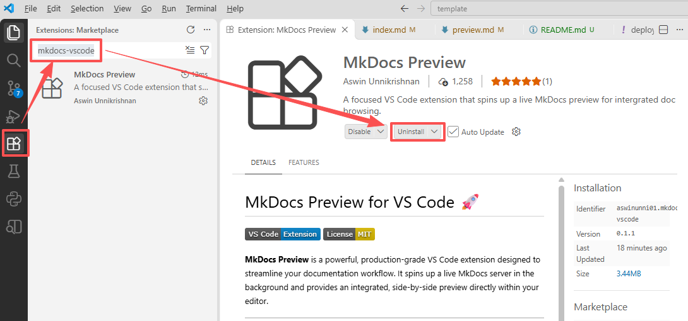
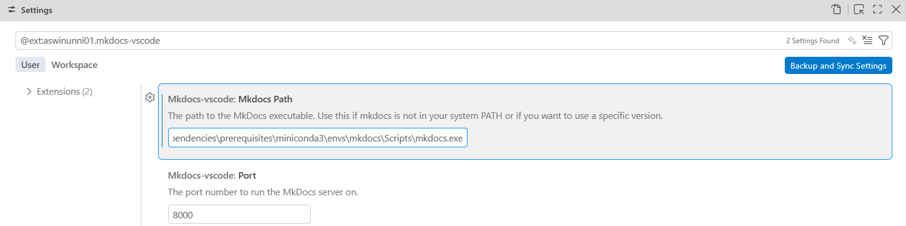
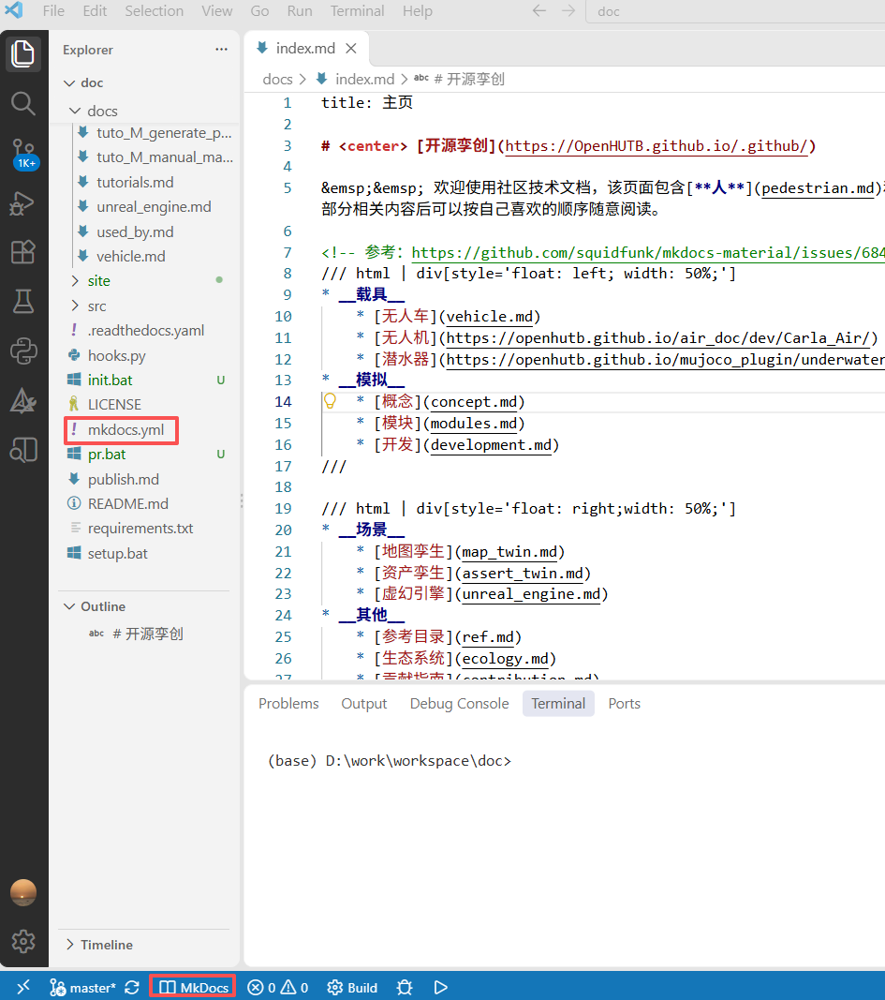
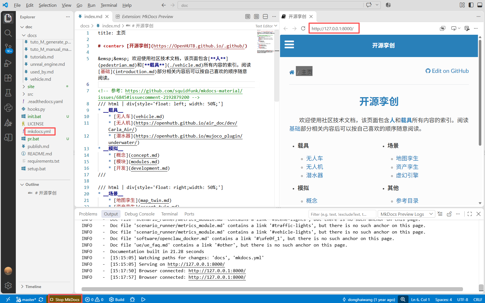

使用 VS Code 文档撰写时的实时预览
由于 OpenHUTB 社区的文档和默认的 Markdown 和 mkdocs 预览的文档有所区别，下面介绍社区文档撰写时的实时预览方法，以加快文档撰写的速度和质量（该方法同样适应于 mkdocs 文档的撰写）。
1.在 VS Code 的右侧的 Extensions (Ctrl + Shift +X) 中搜索 mkdocs-vscode 插件并安装；

2.安装 Python 3.8+ 和相关的依赖
pip install hutb-doc
3.由于系统中默认的 mkdocs 命令可能不是 mkdocs 命令所在的 Python 虚拟环境，点击上图中的齿轮图片并选中下拉菜单中的 Settings，进行 mkdocs 命令绝对路径的设置

4.打开包含 mkdocs.yml 文件的工作空间。
5.左下角的状态栏中找到并点击 Mkdocs 按钮。

6.等待服务启动，刷新弹出的预览框，即可看到文档的最终效果。每次修改后，都可以在预览框中看到修改后的效果。点击Stop MkDocs即可停止服务器。
